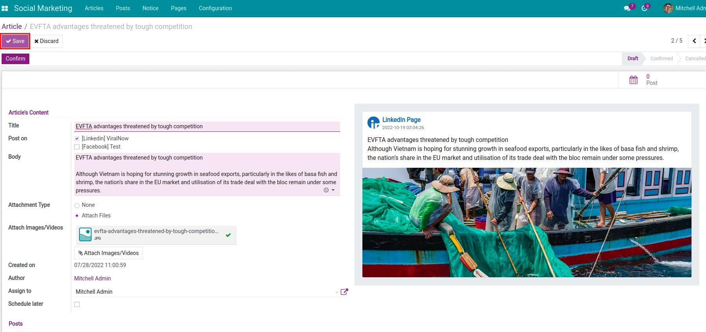
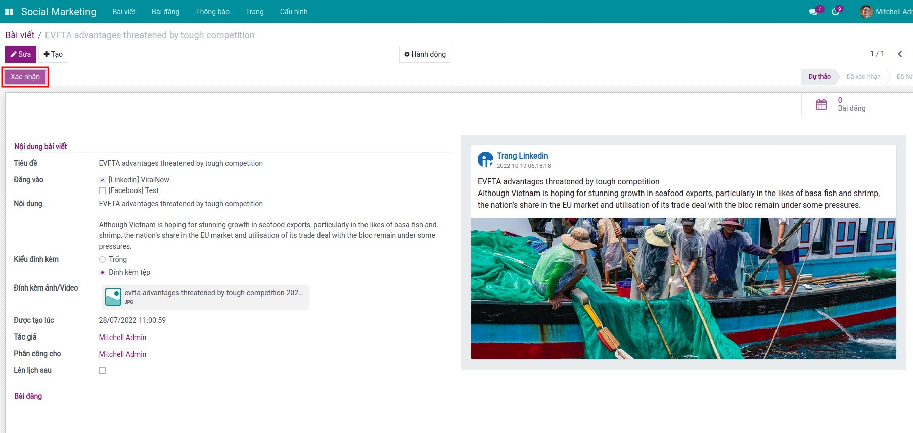
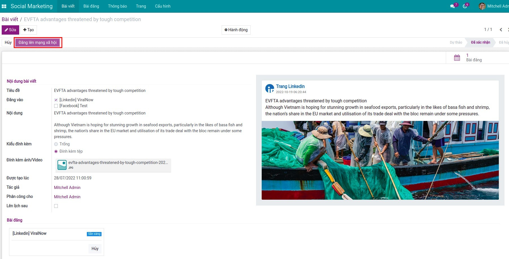
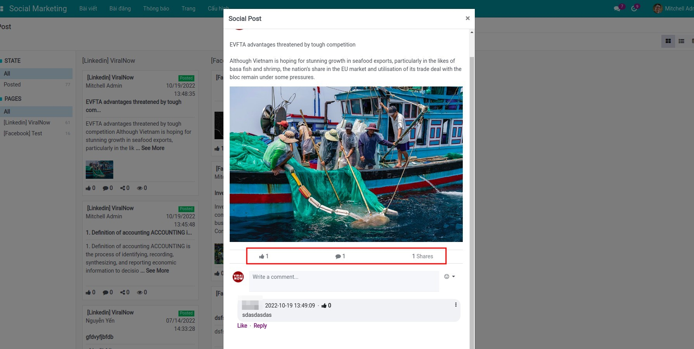

Cơ sở ORM và giao diện cho bộ marketing mạng xã hội Viindoo
Module cơ sở kỹ thuật quy định các model dùng chung (media, trang, bài viết, bài đăng, thông báo), cơ chế đồng bộ, trường chỉ số, nhóm quyền và khung giao diện backend tích hợp Discuss trong Odoo. Đăng bài thật lên mạng xã hội và tích hợp API nhà cung cấp do các module mở rộng đảm nhiệm, ví dụ Facebook Social Marketing và LinkedIn Social Marketing, các module này phụ thuộc vào gói này. Hãy cài module cơ sở kèm từng connector cần dùng để mỗi mạng xã hội có thể cập nhật riêng mà không phải tách nhánh lõi.

Lớp ORM ổn định, giao diện quản trị, khung cron và quy tắc truy cập mà các module Facebook, LinkedIn và connector tương lai kế thừa. OAuth, API gọi ra phía nhà cung cấp và xử lý riêng theo từng nền tảng mạng xã hội nằm ở module mở rộng; module cơ sở giữ một trục tích hợp thống nhất.
Media mạng xã hội, trang, bài viết, bài đăng và thông báo là các bản ghi đầy đủ, có thể mở rộng theo từng kênh.
Cron đồng bộ, kéo bài cũ và theo dõi trạng thái token xác thực.
Lượt xem, lượt thích, bình luận, lượt chia sẻ; đính kèm ảnh, video, tệp, liên kết; có thể gắn với kênh Discuss khi cấu hình.
Ba nhóm quyền (Administrator, Approver, Editor) tách quản trị hệ thống với thao tác nội dung hằng ngày.
Module cơ sở kèm module mở rộng: một lõi kỹ thuật trong Odoo, rồi lắp thêm đúng module theo từng mạng xã hội bạn dùng (Facebook, LinkedIn, v.v.). Tránh lặp model theo từng kênh và giảm phụ thuộc bảng tính hay bộ công cụ marketing tách rời.
Phát hành viin_social_facebook, viin_social_linkedin hoặc connector khác phụ thuộc module cơ sở thay vì nhân đôi model bài viết và bài đăng cho từng mạng xã hội.
Mail, Discuss, trình soạn thảo web và UTM đi cùng quy trình đội bạn đã quen trên giao diện quản trị.
Một nơi vận hành cho nhiều mạng xã hội khi đã cài các module kết nối Viindoo tương ứng.
Thông báo và bản ghi bài đăng giúp marketing và hỗ trợ dùng chung lịch sử tương tác thay vì xử lý rời trong hộp thư.
viin_social. Để đăng bài trọn vẹn, cài module cơ sở và từng connector cần dùng. Xem ứng dụng liên quan.Ảnh chụp minh họa toàn bộ kiến trúc (module cơ sở cùng module mở rộng như Facebook hoặc LinkedIn). Các bước dưới đây giả định connector đã được cài; module cơ sở chỉ cung cấp model và giao diện, phần còn lại do module mở rộng hoàn thiện.
Soạn bài viết (article) và bài đăng (post) kèm đính kèm đa dạng trong Odoo trước khi xuất bản.
Dùng vai trò phê duyệt để nội dung qua kiểm soát trước khi lên lịch hoặc đăng.

Đẩy bản đã duyệt lên tài sản Facebook hoặc LinkedIn qua module mở rộng Viindoo.

Theo dõi trạng thái, chỉ số tương tác và các bước xử lý tiếp theo trên giao diện kanban và danh sách thống nhất.

Xem video tổng quan, sau đó mở bản demo Viindoo đã cài Social Marketing (module cơ sở) và ít nhất một module connector để menu đăng bài giống môi trường triển khai thật.
Cho biết bạn cần chỉ module cơ sở (dự án tích hợp) hay module cơ sở kèm connector (Facebook, LinkedIn, v.v.). Nêu rõ ấn bản Odoo, có đang dùng Social Marketing mặc định của Odoo hay không, và số lượng bài đăng dự kiến.
sales@viindoo.comGửi kèm mã đơn hàng, phiên bản module (viin_social và connector), các bước tái hiện lỗi, thông báo lỗi API hoặc token, và nội dung console trình duyệt nếu lỗi giao diện.
mail, web_editor, to_base, utm. Không gói SDK Facebook hay LinkedIn trong module cơ sở.web.assets_backend (giao diện kanban, danh sách, hộp thoại) do module cơ sở cung cấp.viin_social_facebook, viin_social_linkedin) bổ sung OAuth, API gọi ra nhà cung cấp và quy tắc theo từng kênh mạng xã hội trên các model này.viin_social/tests phủ module cơ sở (trang, bài viết, quyền); module connector có bộ test tích hợp riêng.Trước hết: developer, PO (Product Owner), đối tác triển khai hoặc kinh doanh bộ giải pháp marketing mạng xã hội Viindoo. Đội marketing thường cài module cơ sở cùng lúc với module Facebook, LinkedIn hoặc connector khác để có trọn quy trình đăng bài.
Dùng module cơ sở kèm module connector: soạn, phê duyệt và theo dõi bài đăng kèm chỉ số sau khi Facebook, LinkedIn hoặc mở rộng khác đã cài và ủy quyền.
Kế thừa module cơ sở để phát hành connector mới hoặc tùy biến quy trình phê duyệt, không phải định nghĩa lại các bản ghi marketing mạng xã hội cốt lõi.
Bàn giao bộ marketing mạng xã hội Viindoo thống nhất, thay cho tích hợp tạm bợ hoặc trùng lặp ứng dụng marketing của Odoo.
Module mở rộng (phụ thuộc module cơ sở)
Các ứng dụng này mở rộng Social Marketing bằng OAuth, API và logic riêng theo từng mạng xã hội. Cần thiết để đăng bài thật lên Facebook và LinkedIn; cài thêm sau module cơ sở.
Facebook Social Marketing
Kết nối trang Facebook, đăng bài và đồng bộ chỉ số tương tác vào model marketing mạng xã hội dùng chung.
Xem trên AppsLinkedIn Social Marketing
Ủy quyền tài sản công ty trên LinkedIn và thống nhất đăng bài theo cùng luồng bài viết và bài đăng.
Xem trên Apps